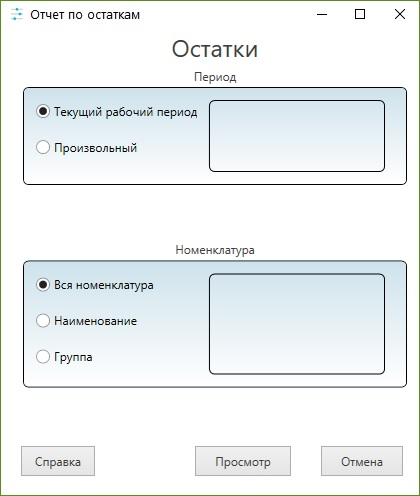

Формирование отчетов
Для формирования отчетов по параметрам необходимо в меню нажать пункт "Отчеты" и выбрать нужный вам отчет
После этого откроется окно настройки параметров отчета

Если необходимо можно задать параметры отчета, а именно:
- Период
Можно выбрать текущий рабочий период или задать дату самостоятельно.
- Номенклатура
По умолчанию стоит вся номенлатура. Можно так же сформировать отчет по наименованию и по группе номенклатуры
После выбора параметров отчета необходимо нажать на кнопку "Просмотр", после чего откроется окно просмотра отчета.